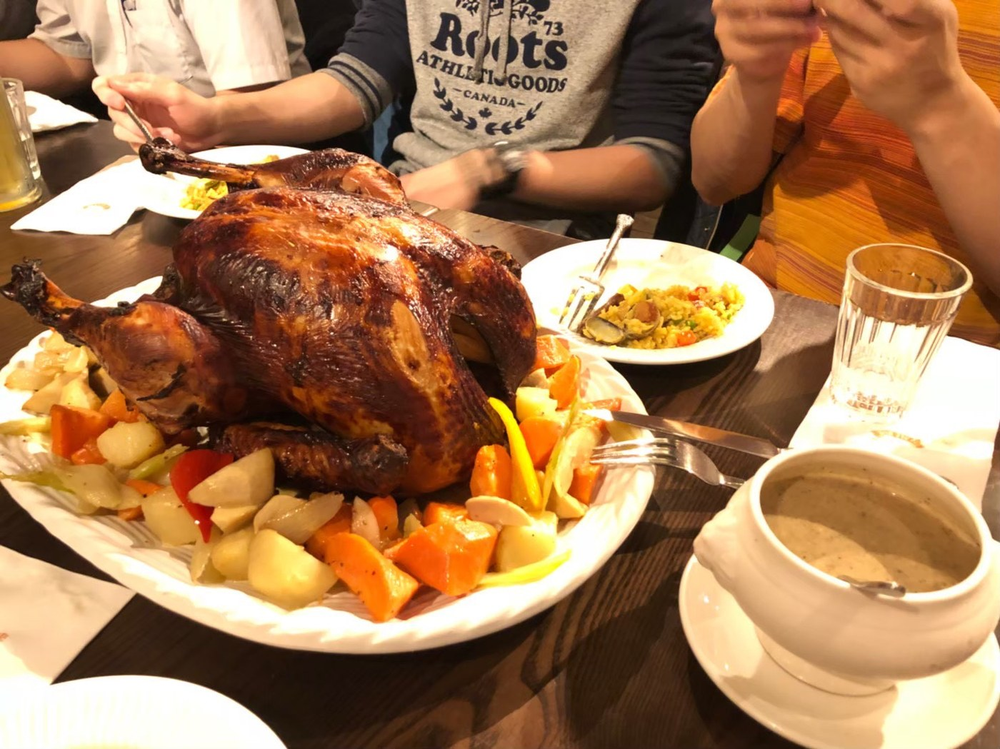
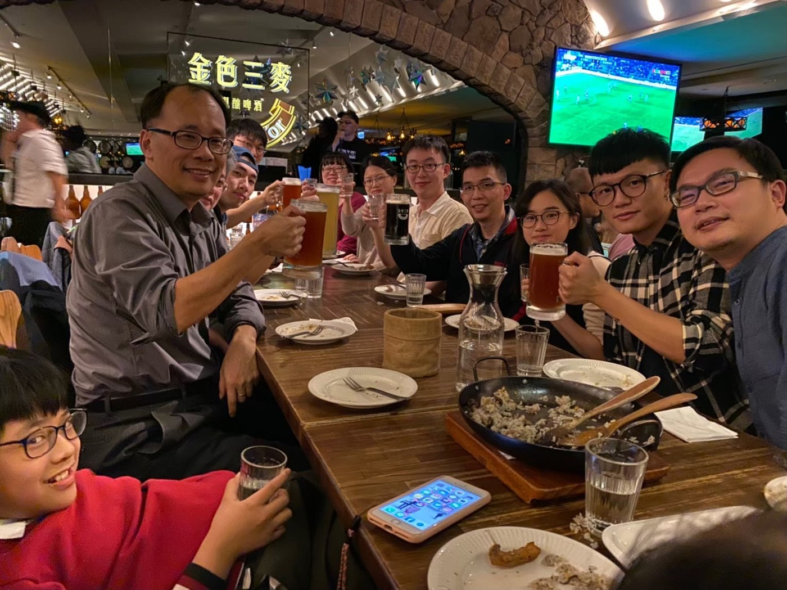
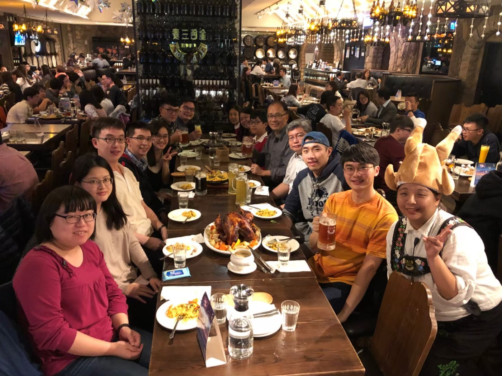
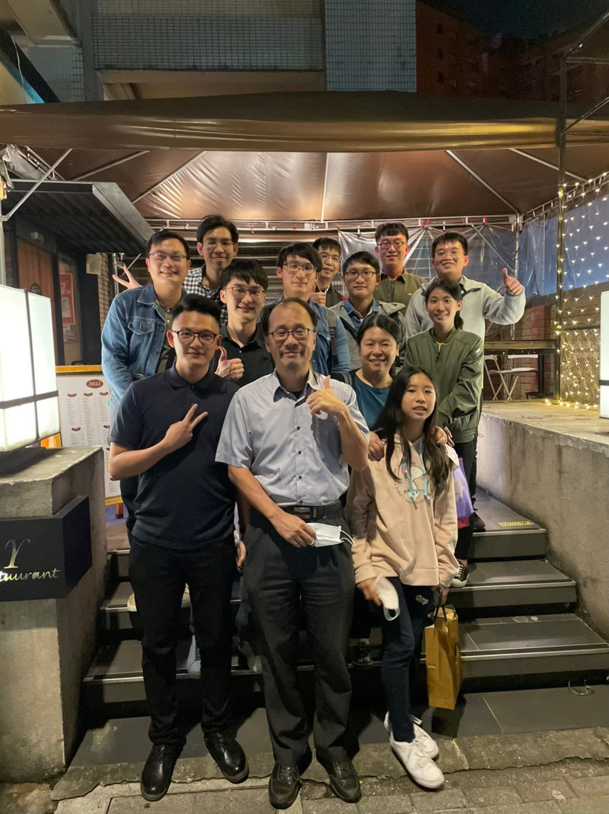
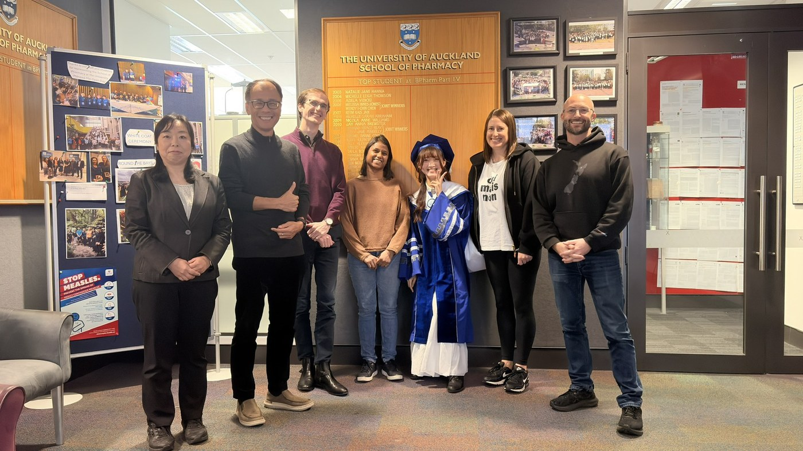
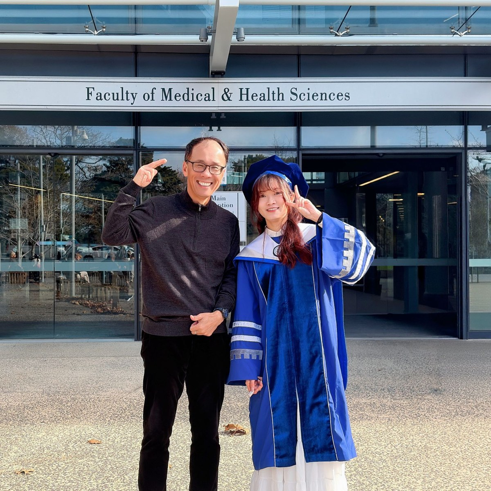
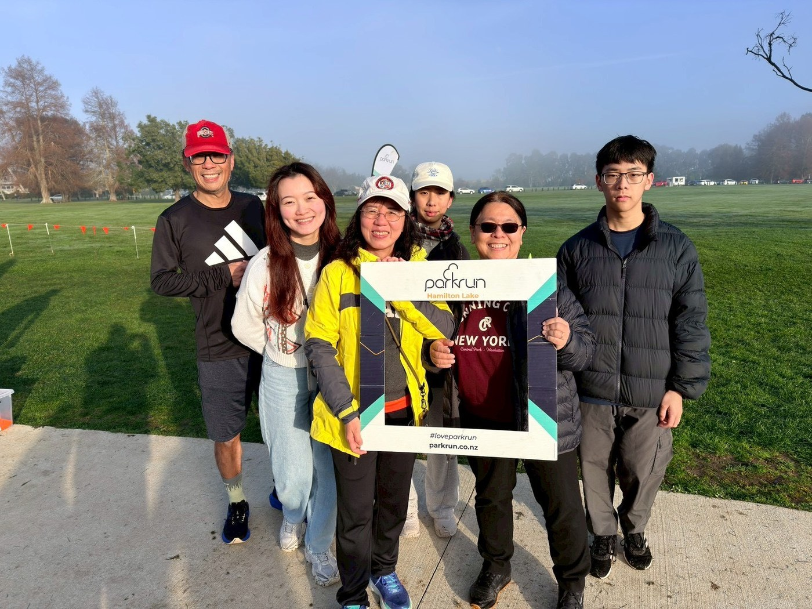

人員
成員
實驗室的成員，包含歷屆畢業的學長姊。
現有成員
謝宜敏 Hsieh, Yi-Min
陳俞璇 Tan, Yu-Xuan
歷屆畢業生
論文皆由胡德民教授指導（林欣慧為共同指導）。
陳薇彭 Chen, Wei-Peng
國立陽明交通大學 藥學系碩士班
Chemical Characterization of Solvent-Mediated Browning of Amino Acids and the Derived Nanoparticles林婉芸 Lin, Wan-Yun
國立陽明交通大學 藥學系碩士班
Investigation of Nanoparticle Formation by Solvent-Mediated Browning Reaction of Phenylalanine金紹楷 Chin, Shao-Kai
臺北醫學大學 藥學系碩士班
A Nano-Drug Delivery System Based on Solvent-Mediated Browning Reaction of Tryptophan and Basic Amino Acids: Optimization, Potential Pharmaceutical Applications, and Material Characterization張芷榕 Chang, Chih-Jung
國立陽明交通大學 藥學系碩士班
Browned Lysozyme: Characterization and Potential Pharmaceutical Application林欣慧 Lin, Hsin-Hui
臺北醫學大學 藥學系碩士班
Nanoparticle drug delivery systems based on the novel browning reaction of biogenic amines（共同指導教授：林美香博士）徐瑋秦 Hsu, Wei-Chin
國立陽明交通大學 藥學系學士班
An Albumin-Based Floatable Gastro-Retentive Drug Delivery System梁嘉安 Liang, Jia-An
國立陽明交通大學 藥學系碩士班
Exploring the Browning Reaction of Combinatorial Amino Acids for Applications in Nano Drug Delivery黃駿逸 Huang, Chun-Yi
國立陽明交通大學 藥學系碩士班
A Chemical and Pharmaceutical Study of a Novel Amino Acid Reaction System with Potential Applications in Drug Delivery夏銘 Hsia, Ming
國立陽明交通大學 藥物科學院藥學系學士班
Anticancer Activity of Tryptophan-Derived Novel Maillard Reaction System周宏璋 Chou, Hung-Chang
臺北醫學大學 藥學系博士班
Pharmacokinetics of Organosilica Nano-Delivery Systems陳冠廷 Chen, Guan-Ting
國立陽明大學 生物藥學研究所碩士班
Polysulfide Organosilica Nano-Delivery Systems for Methylene Blue: Preparation, Characterization, Photodynamic Activity and Cell-Uptake Study張立皓 Chang, Li-Hao
國立陽明大學 生物藥學研究所碩士班
Simultaneous Delivery of Nitric Oxide and Camptothecin Using Hybrid Nanoparticles吳孟儒 Wu, Meng-Ju
國立陽明大學 生物藥學研究所碩士班
Co-Delivery of Nitric Oxide and Mitoxantrone Using Organosilica Nanoparticles: Preparation, Characterization, and Anticancer Activities羅智暉 Lo, Chih-Hui
國防醫學院 藥學研究所碩士班
Synthesis and Characterization of Nitric Oxide-Releasing Silica Nanoparticles by a Polymer-Assisted, One-Pot Method林書儀 Lin, Shu-Yi
國防醫學院 藥學研究所碩士班
Photophysicochemical and Photobiological Properties of Nanosilica-based Nitric oxide/Theranostics Co-Delivery Systems王孟仁 Wang, Meng-Jen
國防醫學院 藥學研究所碩士班
Nano-Silica Drug-Delivery Systems for Co-Delivering Nitric Oxide and Doxorubicin王思元 Wang, Su-Yuan
臺北醫學大學 藥學系碩士班
Preparation and Characterization of Thiol and Amine Bifunctionalized Silica Nanoparticles: Application to Delivery of Antisense Oligonucleotides張良敏 Chang, Liang-Min
國防醫學院 藥學研究所碩士班
Kinetic Study of Cancer-Cell-Mediated Extracellular Metabolism of S-Nitrosothiols
Welcome to TMH lab family!!!!







更多團體照與生活照將於取得後補上。 待補充